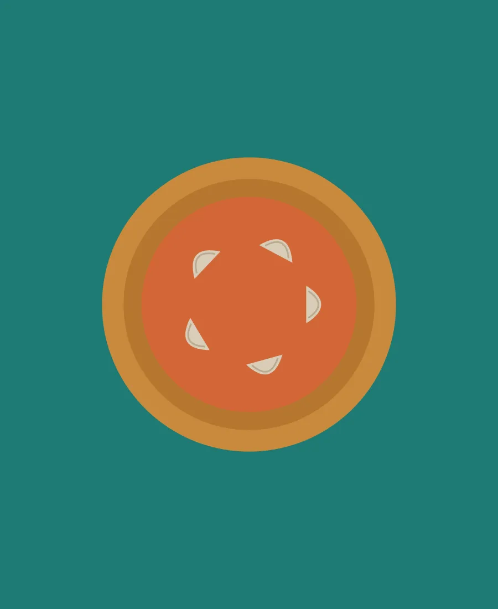

Olhão · Ria Formosa · Algarve
Marisco da ria, à mesa em Olhão
Amêijoas, ostras e peixe que chegam todas as manhãs do mercado ao lado. Cozinha algarvia, sem pressas, com vista para a ria.

A nossa casa
Uma família, uma ria e o marisco do dia
O Maré Alta abriu em 1987, a dois passos dos mercados de Olhão. Começou como tasca de pescadores e continua a ser gerido pela mesma família.
Todas as manhãs escolhemos o marisco e o peixe na lota. O que não está fresco não entra na cozinha, por isso o menu muda com a maré e a estação.
-
Da lota para a mesa
Marisco e peixe comprados todas as manhãs.
-
Esplanada sobre a ria
Pôr do sol com vista para as ilhas da Armona e Culatra.
-
Receitas da casa
Cataplana, arroz de lingueirão e xerém de amêijoa.
Olhão à mesa